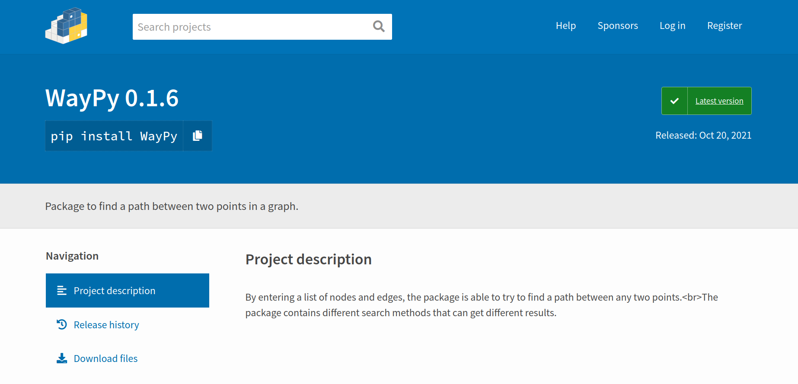
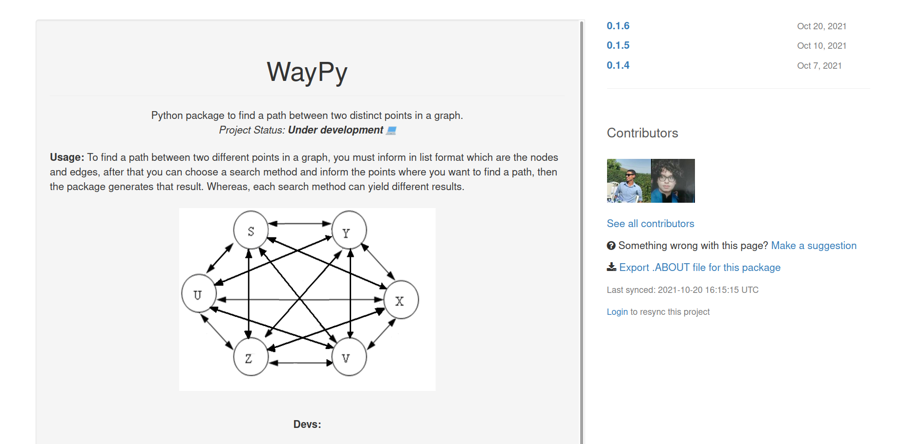

Página Inicial WayPy - pacote
O pacote realiza buscas em grafo para tentar encontrar caminho entre dois pontos distintos, usando diferentes métodos.
O tipo de problema que o WayPy se propõe a resolver são os que precisam encontrar uma saída a partir de um ponto específico. Então, encontrar rota entre duas cidades em um mapa é um problema que pode usar o pacote para resolver, o projeto Rotas Cidades é um exemplo disso.
Outros problemas na área de Inteligência Artificial como encontrar a saída em um labirinto, encontrar caminho dentro de ambientes como supermercados e galpões, ou qualquer outra coisa semelhante, o WayPy é aplicável.
Os 8 métodos de busca implementados são por:
- Amplitude
- Profundidade
- Profundidade Limitada
- Aprofundamento Iterativo
- Bidirecional
- A*
- Greedy
- Custo Uniforme
pip3 install WayPy
Participação no trabalho: Luiz Fernando Rodrigues
Tecnologias usadas: Python.
código

